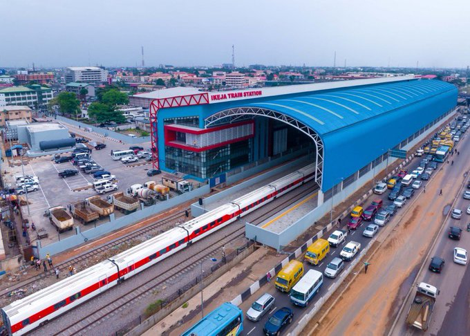

About Me

My name is Benedict Nwanze, and I'm a web developer based in Lagos, Nigeria. I come from a family of four, with one elder brothers and a loving mother and father. In my free time, I watch animes, read books, and learn new things.
Lagos state, Nigeria
Lagos State is a state in southwestern Nigeria. Of the 36 Nigerian states, it is the second most populous state but the smallest in area. Nigeria, officially the Federal Republic of Nigeria, is a country in West Africa. It is situated between the Sahel to the north and the Gulf of Guinea to the south in the Atlantic Ocean. It covers an area of 923,769 square kilometres (356,669 sq mi). With a population of more than 230 million, it is the most populous country in Africa, and the world's sixth-most populous country.